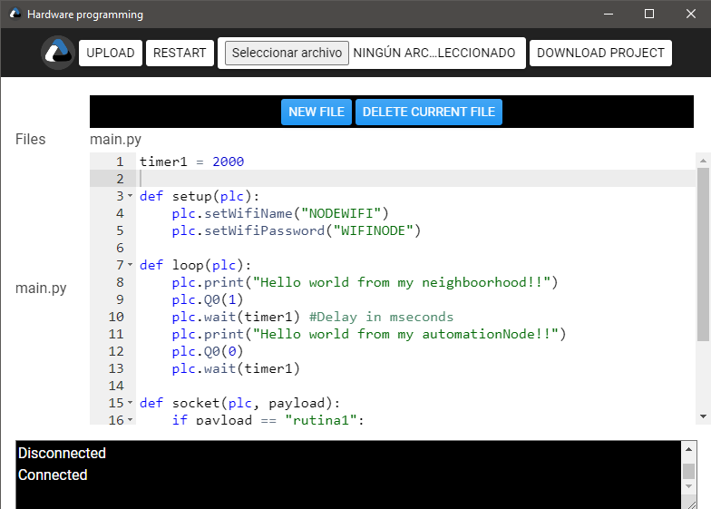

Principal window menu for to select wath type of programming you want to select and access to configuration and sockets monitor

Software programming is for to create an user interface written in pseudo python for web version with the framework called Brython
User interface window is the result of software programming and is the final interface for use plcNode user friendly

Hardware programming is for to create a routine for plcNode hardware and to link it with the user interface created in software programming, this hardware programming use pseudo python for microcontrollers with a framework called Micropython
Socket monitor is a window for to test plcNode commands scheduled in hardware programming via sockets or serial comunnication